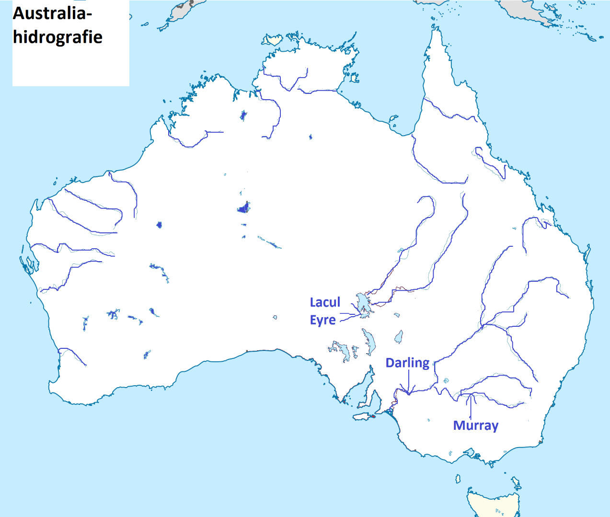

Hidrografia Australiei este destul de săracă în ape de suprafață si lacuri. Cel mai important sistem hidrografic este cel format de fluviul Darling impreuna cu afluentul sau Murray, iar cel mai important lac este L. Eyre.

Fluviul Darling

Fluviul Murray

Lacul Eyre -imagine satelitara